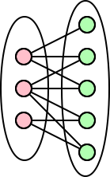
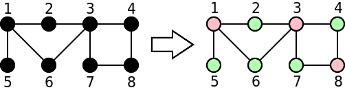

Para efeitos da nota atribuida à resolução de exercícios ao longo do semestre - Submeter até 23:59 de 29 de Maio
(o problema continuará depois disponível para submissão, mas sem contar para a nota)
[para perceber o contexto do problema deve ler o guião da aula #08]

Uma empresa de alojamento de websites teve um problema de hardware e algumas das suas unidades de armazenamento ficaram com problemas. Um dos seus melhores clientes é uma loja de produtos tecnológicos. A base de dados dessa loja continha dados sobre as compras, na forma de um grafo onde os nós eram compradores e produtos. Nesse grafo, existiam arestas unicamente entre compradores e produtos.
Como os dados ficaram corrompidos, os dados sobre o tipo de cada nó (comprador ou produto) foram perdidos. A empresa quer agora perceber se o grafo ainda armazenado é plausível. Em particular, quer saber se é possível dividir os nós do grafo em dois grupos A e B tal que cada aresta liga um nó de A a um nó de B, ou seja, tal que não existem arestas entre dois nós de A, ou entre dois nós de B (não faria sentido haver uma aresta de um comprador para um comprador, ou de um produto para um produto). Um grafo com esta propriedade diz-se bipartido.
Considere por exemplo o grafo da figura seguinte com 8 nós. O grafo é bipartido, pois a divisão indicada na imagem da direita divide o grafo em dois grupos, um vermelho e um verde, de tal modo que todas as arestas ligam nós de grupos diferentes.

Já o grafo da figura de baixo não é bipartido. Os nós 2 e 5 têm de ter cor diferente do nó 1, pois são seis vizinhos. Por sua vez, isto implica que o nó 6 tem de ter cor diferente do nó 5. Em conjunto, isto significa que não é possível colorir o nó 3, pois este é vizinho de dois nós de cor diferente.
Podes ajudar a empresa de alojamento a perceber se um grafo é plausível, ou seja, se é bipartido?
Dados vários grafos não dirigidos, a tua tarefa é indicar se cada um deles é ou não bipartido.
Na primeira linha do input vem um número N indicando o número de casos a considerar. Cada dos casos começa uma linha com um inteiro V indicando o número de nós, seguido de uma linha com um inteiro E indicando o número de arestas. Seguem-se E linhas, cada uma com dois inteiros A e B indicando que existe uma aresta entre A e B. Os nós estão numerados entre 1 e V, ou seja, 1 ≤ A, B ≤ N. É garantido que os grafos são conexos.
O output deve ser constituido por N linhas, cada uma com a palavra sim se o grafo correspondente for bipartido, ou nao, se o grafo não for bipartido.
São garantidos os seguintes limites em todos os casos de teste que irão ser colocados ao programa:
| 1 ≤ N ≤ 10 | Número de casos | |
| 1 ≤ V ≤ 50 | Número de nós | |
| 1 ≤ E ≤ 500 | Número de arestas |
2 8 9 1 5 1 2 1 6 2 3 6 3 3 4 3 7 4 8 7 8 8 8 1 2 1 5 5 6 2 3 6 3 3 7 7 8 8 4
sim nao
O exemplo de input corresponde aos dois grafos das imagens.
Desenho e Análise de Algoritmos (CC2001)
DCC/FCUP - Faculdade de Ciências da Universidade do Porto